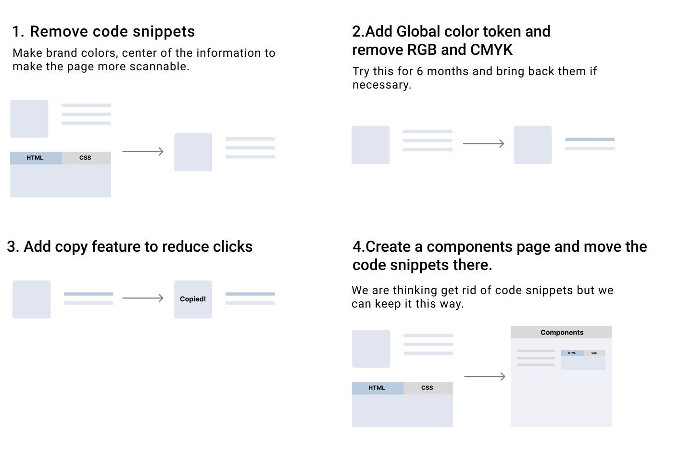
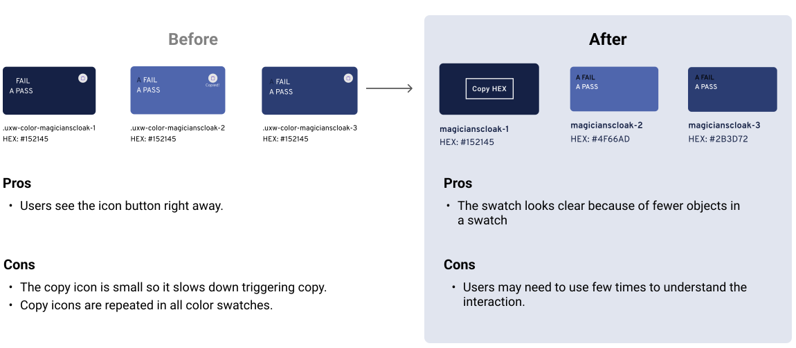
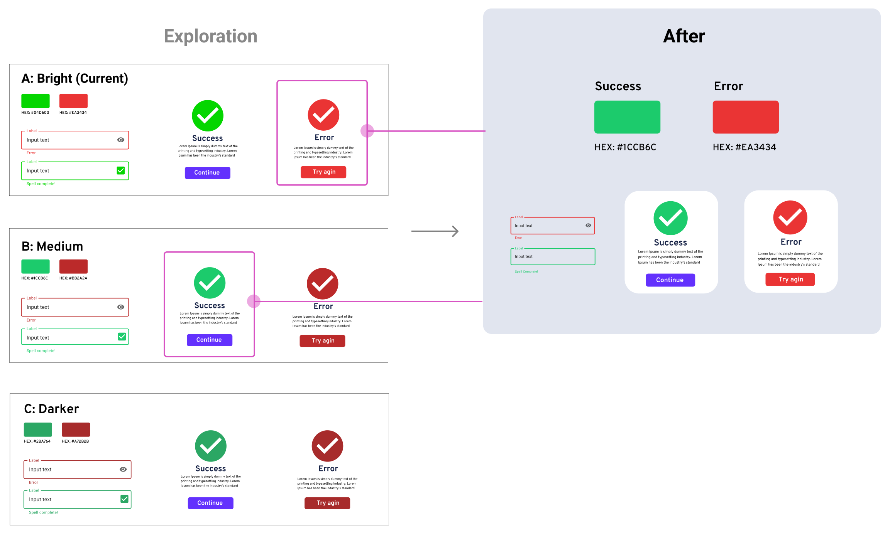

Design System Colors Page
A project to update a design system’s color page.
Including redesigning the existing Colors page, creating semantic colors and Dos and Don’ts.

A project to update a design system’s color page.
Including redesigning the existing Colors page, creating semantic colors and Dos and Don’ts.
UX Wizards is a design community for enthusiasts of all levels to share knowledge and grow together. UX Wizards launched the first Design system on April 14, 2021 (I joined this first design system project and worked on Logos and Icons page).
Designers and developers used the design system for 6 months and we found out that colors are not used consistently across digital products so we created color guidelines. In addition, we reviewed the existing color page and made brand colors more scannable.
YEAR
2021, 6 month
ROLE
Project Lead, Design, and Development
TEAM
Seiko (self), Max (Designer), Chaela (Designer), Kaisen (Developer)
TOOLS
Figma, Material UI, Github
We used color page for months and we found some challenges.
Overall color page goals are 2 things.
This case study has 3 sections. First is redesigning the existence color page which is the brand colors section. Second is the Semantic colors. Third is the Dos and Don'ts. This case study follows by the order.
This is the first section of the page and displays brand colors. When we reviewed this section, Design System had been used for over 6 months and this was a good opportunity to come back and iterate the design.

Current brand colors come with a lot of information which includes color swatches, color codes, and code snippets for HTML and CSS. Users Find a color among all of this information takes time.
To simplify the brand color design and make finding color information faster.
Before taking you through the process. I'd like to show the Before and After of the design. As you can see the design is simpler and the brand color is more scannable. I thought this section would be easy but it was challenging because we had different opinions.
We started the discussion on whether to remove code snippets or not. Designers had different opinions. Some agree, and others thought it better to keep the code snippets. We couldn’t come to a conclusion at the meeting, so how should we decide? We decided to ask users. How users have been using it? Is it a useful feature or not so much? Instead of assuming and designing, we conducted a user interview.
We asked 5 designers and developers who used the existing website for 6 months to get feedback.
Feedback we received
This feedback session was turing point to remove code snippets.
Based on the feedback, we made an update list.
Iterations 1 & 2: Brand color swatch
Removed Code snippets, RGB, and CMYK colors. Added each brand color’s tokens. This is the before and after the brand color swatch. You can see the now brand colors are focal points.
Exploration
Here is the exploration of the color swatch section. We started from removing code snippets. Increased visibility of color swatch and then removed RGB and CMYK colors. Final we removed copy icons so looks color stands out more.
Iteration 3: Copy function
I did a few iterations on the copy feature. The below image was a major change. The original version of the copy icon is small. To copy a HEX code, users needed to press on a small icon area. In the final design, I made the color swatches into buttons. Hover states Copy Hex is visible because users use this on desktop and this indicates to next action. One consideration of this final design is the user may need to use few times to understand how to use it.
Copy interaction overview
The color swatch enlarges and the Copy HEX text appears if the user hovers over a color. When clicked, the HEX value is copied to the clipboard and the HEX Copied feedback is displayed.
Color Contrast
We use black and white color text to have good contrast. How did we choose black or white text? This is followed by the contrast guide on the color swatch. On the color swatch, white and black Color contrasts are shown each color. We took the passing color. So Navy color swatch used white text and the white color swatch used black text in this example.
Demo of the copy function
Iteration 4: Move Copy Snippets to Components Page
Even though we removed code snippets from colors page, we decided to keep the code on the components page. This Component page is HTML/CSS specific.
This is the second section and it shows the color roles.

Our challenge of Semantic color is UX Wizards has over 10 designers who are working on websites and products. They use brand colors but the usage is not consistent. Users need to remember color usage for each product.
The image right is an example of color being inconsistent and confusing. This uses purple for both titles and links, and users need to think about which is a link and which is a title. We wanted to avoid this type of problem across the products.
Our goal is to create a color guideline to use color intentionally in order to increase brand cohesion and better useability across digital products. In addition, reduce color decision fatigue for designers and developers.
We started with research to determine how established design systems display semantic colors on their website.

Our favorite user interface was E-trade
What we liked about it
Other findings

I audited UX Wizard’s digital products (Website and Design system) and took screenshots of key components. Then I categorized them into Background, Buttons, Links, and Accent Colors to see which colors are used. These screenshots are shown below.
After the exploratory research and audit products, we discussed the design layout and the semantic color categories we’d like to include. We selected colors that can be the standard for each category like text, button, and background colors. We hadn’t had error and success colors, but we decided to add them to the page for future production.
By using the semantic color categories, we created the Design version 1.
We conducted a feedback session with our stakeholders using the V1 Design to ensure our design was heading in the right direction.
The feedback we received was:
Given this feedback we did 3 iterations to address the issues brought up in the freedback session.
Iteration 1: Breakdown sections
We made this change to find an item quickly. Before text, buttons and banners were in one section, now we created a separate section for text and buttons. The banner color was moved to under the background. In addition, we created Borders and lines in their own section.
Below is before and after changes in detail.
Iteration 2: Add examples usage
To showcase the color guide in real practice, another designer made this sample design.
Iteration 3: Error and success colors
We received feedback that the error and success color looks too saturated, but how can we judge which color is the best? Just looking at the color is hard to tell whether this color works or not. To overcome this, we created a sample UI. Then we picked 3 potential color pairs and applied them to the UI to compare the colors.
Final of the semantic colors
This last section was made by another designer. I contributed the styling.

The Dos and Don’ts section is to showcase how to use colors effectively and avoid mistakes that we found in the past. After the design, Dos and Dont's are side by side to clarify the comparison.
All the sections are now consolidated into one. We reviewed the contents and design to make sure it flowed nicely and the design is unified.
This is the demo of the final Colors page
1. The current color swatch is ordered like the original brand guide. We’d like to change this order to be by shade.

2. The colors page is long. How can we enhance the UI and improve usability?